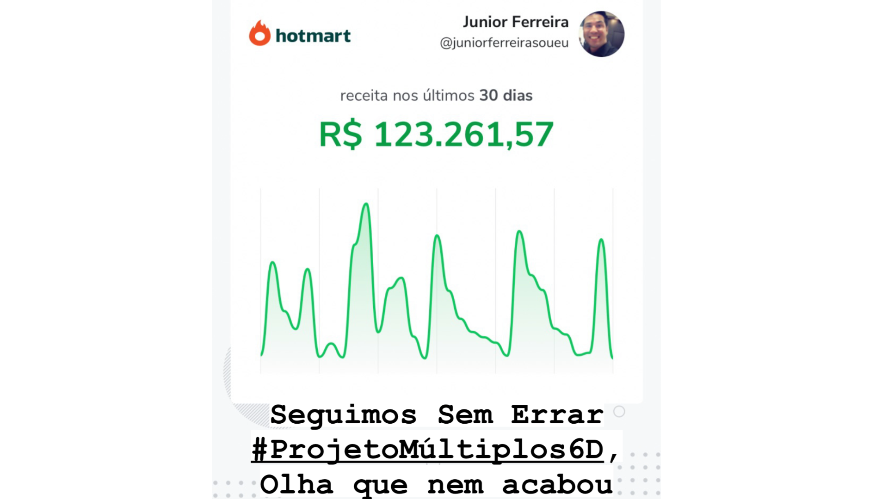
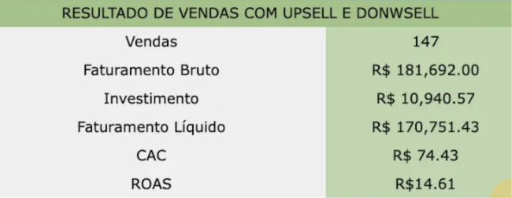
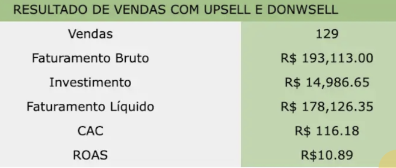
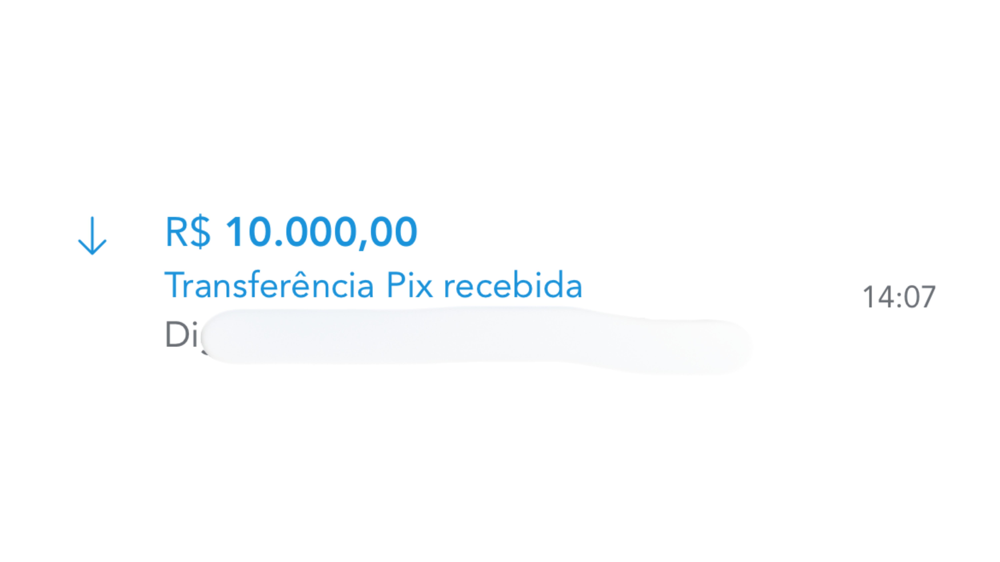
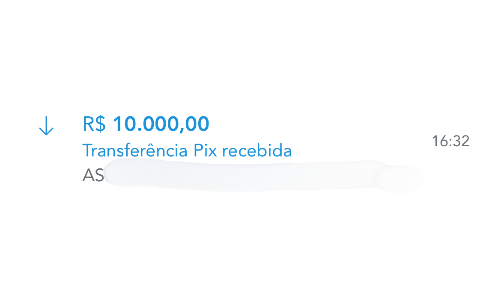

Eu criei uma MoneyMark™ para fazer vendas de R$3K a R$30K sem virar escravo da operação.
Agora vou te mostrar como construir a sua…
→ DreamLife é o processo onde você transforma sua Experti$e em um ativo digital de alto valor.
Com Posicionamento, Aquisição e Conversão para vender sem virar escravo da operação…
Uma estrutura para transformar o que você sabe em uma oferta clara e que vende, diferencia você no mercado e diminui a dependência da sua presença.
Porque vender mais não resolve se cada venda vira mais peso na sua operação.
Talvez Você já faça vendas. Mas o real problema é o que cada venda leva junto.
E talvez esse nem seja o problema.
Você fecha cliente, Entrega resultado, Resolve problema.
Tem conhecimento que o mercado paga para acessar.
Só que cada nova venda vem com uma conta escondida.
- Mais mensagem.
- Mais reunião.
- Mais ajuste.
- Mais cobrança.
- Mais acompanhamento.
- Mais decisão.
- Mais coisa esperando você para andar.
A venda entra como vitória.
Mas logo vira mais uma demanda presa no seu colo.
E aí você percebe uma coisa meio cruel:
vender mais não necessariamente te deixou mais livre.
Só deixou a operação mais cara, mais cheia e mais dependente de você.
O problema não é sua capacidade de vender.
É que hoje sua expertise ainda está presa num modelo onde cada venda aumenta a quantidade de energia e tempo que o negócio consome de você.
O problema não é vender pouco.
É vender dentro de uma estrutura que prende você.
Porque se toda venda depende de você para acontecer…
E depois depende de você para ser entregue…
Vender mais só aumenta o problema.
- Mais lead.
- Mais call.
- Mais cliente.
- Mais entrega.
- Mais ajuste.
- Mais suporte.
- Mais você.
Por fora parece crescimento.
Por dentro é só um negócio ficando mais dependente da hora mais cara da empresa, A SUA.
E talvez seja por isso que tanta coisa que você tentou até funcionou por um tempo…
Mentoria de estratégias soltas, tráfego, funil, lançamento, high ticket, conteúdo, copy…
mas depois tudo voltou para o mesmo lugar.
Porque a tática mudou.
Mas o centro da operação continuou sendo você.
Eu chamo isso de Modelo Hamster™.
Uma estrutura que parece progresso…
mas na pratica você nunca sai do lugar.
E o pior é que isso não melhora sozinho…
Se você continuar vendendo dentro da mesma estrutura…
- Venda vira mais entrega.
- Cliente vira mais suporte.
- Demanda vira mais urgência.
- Faturamento vira mais responsabilidade presa em você.
E aí acontece a parte mais perigosa:
Você começa a chamar prisão de crescimento.
Porque o número sobe.
Mas sua liberdade não.
A agenda continua cheia. A cabeça continua ligada. A operação continua esperando você.
E cada novo "próximo nível" só parece exigir uma versão mais cansada sua.
Esse é o custo real de continuar igual.
Não é só perder dinheiro.
É continuar usando sua expertise para construir uma operação que te prende cada vez mais.
A saída não é vender mais no braço. É transformar sua expertise em um ativo.
Porque existe uma diferença brutal entre vender conhecimento e construir uma MoneyMark™.
Quando você vende conhecimento do jeito comum, tudo depende de você.
- Você explica.
- Você convence.
- Você responde.
- Você entrega.
- Você acompanha.
- Você ajusta.
- Você repete.
Mas quando sua expertise vira um ativo, o jogo muda.
O posicionamento começa a filtrar quem chega.
O conteúdo começa a gerar percepção antes da conversa.
A página conduz a decisão de compra.
A oferta gera receita previsivel.
A venda deixa de depender só do seu esforço no 1:1.
E a entrega começa a seguir uma estrutura.
É isso que eu chamo de MoneyMark™.
Um ativo digital que transforma sua expertise em uma oferta, desejável e cara…
sem você precisar empurrar cada etapa manualmente.




Uma MoneyMark™ não é só uma Oferta Cara.
É um sistema de geração de receitar.
Ela pega o que hoje está solto na sua cabeça…
- sua experiência,
- sua metodologia,
- seus bastidores,
- seus resultados,
- sua forma de enxergar o problema,
e transforma isso em uma estrutura que o mercado consegue entender, desejar e comprar.
Porque o expert comum vende tempo.
- 🔴Vende Call.
- 🔴Vende Entrega.
- 🔴Vende Acesso.
- 🔴Vende acompanhamento.
A MoneyMark™ vende um Ecossistema Organizadado.
- ✅Com nome.
- ✅Com lógica.
- ✅Com promessa.
- ✅Com mecanismo.
- ✅Com aquisição.
- ✅Com conversão.
O sistema que organiza as partes que fazem essa MoneyMark™ funcionar sem depender de improviso o tempo todo.
- Conteúdo para gerar percepção.
- Página para preparar decisão.
- DM para filtrar intenção.
- Oferta para gerar receita.
- Entrega para sustentar resultado.
- IA e processos para tirar peso repetitivo.
Não é para você sumir do negócio.
É para parar de ser o gargalo de tudo.
Dentro do DreamLife, você constrói sua MoneyMark™ em 3 movimentos.
Não é para você assistir aula e depois tentar adivinhar o que fazer.
É para sair com a estrutura montada.
1. Posicionar
Ajustar a forma como o mercado entende sua expertise.
Aqui você define o que vende, para quem vende, por que isso vale mais e por que comparar você com +1 no mercado e começa a parecer errado.
2. Estruturar
Transformar sua experiência em uma MoneyMark™.
- Promessa.
- Mecanismo.
- Oferta.
- Ativos.
- Argumentos.
- Conversão.
A expertise sai da sua cabeça e vira um ativo que o mercado consegue comprar.
3. Vender sem carregar tudo no braço
Organizar aquisição, conteúdo e conversão para gerar demanda com menos improviso.
A ideia não é criar mais uma operação pesada.
É montar uma estrutura que vende sem exigir que você esteja empurrando tudo o tempo inteiro.
O que você vai construir dentro do DreamLife
Você não entra para assistir mais conteúdo.
Você entra para montar sua MoneyMark™.
Na prática, você vai construir:
1. Seu posicionamento de alto valor
Para o mercado entender por que sua expertise vale mais e por que comparar você com commodity não faz sentido.
2. Contrução da Sua Oferta e sua MoneyMark™
Uma oferta digital de R$3K a R$30K baseada no que você já sabe, já faz ou já entrega.
3. Sua mensagem de venda
A forma certa de explicar o problema, apresentar a solução e fazer o lead entender o valor antes de perguntar preço.
4. Sua Estrutura de Aquisição
O caminho para gerar atenção, demanda e conversas sem depender só de postagem aleatória ou indicação.
5. Sua Página de conversão
O ativo que organiza sua promessa, seu mecanismo e sua decisão de compra.
6. Seu plano de geração de receita sem escravidão operacional
Para sua MoneyMark™ vender sem virar mais uma operação pesada presa no seu colo.
No final, a ideia é simples:
você sai com uma estrutura clara para vender sua expertise como ativo.
Não como mais uma prestação de serviço solta.
Isso é para quem tem algo valioso para transformar em ativo.
Você pode já vender online.
Ou pode estar vindo de serviço, consultoria, atendimento, prestação ou operação offline.
Tanto faz.
O ponto não é se você já tem funil, página, audiência ou tráfego.
O ponto é se você tem algo real para empacotar.
- Conhecimento.
- Experiência.
- Método.
- Resultado.
- Processo.
- Habilidade.
- Visão de mercado.
- Capacidade de resolver um problema que alguém pagaria para resolver.
Se você tem isso, mas ainda vende de um jeito solto, pesado ou dependente demais de você…
a MoneyMark™ faz sentido.
- ❌Agora, se você não tem expertise nenhuma…
- ❌não sabe que problema resolve…
- ❌quer uma renda rápida…
- ❌ou está procurando uma promessa fácil para ganhar dinheiro na internet…
Não entra.
Isso não é para inventar valor do nada.
É para pegar o valor que você já tem e transformar em uma estrutura que o mercado consegue entender, desejar e comprar.
Não precisa acreditar em mim…
Quero que você olhe a estrutura.
Porque qualquer pessoa pode prometer venda.
O que quase ninguém mostra é o que precisa existir antes da venda acontecer: posicionamento, oferta, argumento, página, aquisição, conversão, entrega.
É isso que a MoneyMark™ organiza.



Isso aqui não é só um print bonito. É a estrutura que define como sua expertise vira uma oferta de R$3K a R$30K sem depender de improviso o tempo todo.
Antes do preço, entende o que você está levando.
Você não está pagando para assistir aula sobre oferta, funil ou posicionamento.
Você está entrando para montar sua MoneyMark™: a primeira versão do ativo que transforma sua expertise em uma oferta de alto valor.
Se eu fosse construir isso mais perto de você, olhando sua operação, revisando sua oferta e ajustando a estrutura comigo, isso não seria barato.
Porque mexe na alavanca mais cara do negócio: como sua expertise vira dinheiro sem depender de você empurrando tudo no braço.
Uma consultoria para fazer isso de perto começaria em R$5.000…
E uma implementação mais profunda, com posicionamento, aquisição, conversão e operação, chega em 10k-30k onde eu coloco a mão e faço junto…
Porque o ativo que estamos falando aqui não é uma promessa.
É uma estrutura para vender uma oferta de R$3K, R$10K ou R$30K com mais clareza, mais valor percebido e menos dependência operacional.
Agora vem a diferença.
Eu poderia facilmente cobrar R$3.000 por isso, e venderia fácil, fácil…
Mas hoje, sendo bem direto, estou em busca no maior numero de cases possiveis para construir sua MoneyMark™ sem precisar pagar preço de consultoria.
Por isso o valor agora é:
E sim, está baixo.
Não porque vale pouco.
Mas porque ainda está no começo, antes disso virar algo maior…
Agora faz a conta sem emoção.
Se sua MoneyMark™ vira uma oferta de R$3K e você vende uma vez (que pode acontecer ja nos próximos 3-7 dias), o preço já não importa mais…
- Se vende duas vezes, entraram R$6K.
- Se vende três vezes, entraram R$9K.
E isso usando a conta pequena.
Nem estou colocando uma venda de R$10K ou R$30K na mesa.
Então a pergunta não é se R$497 é caro.
A pergunta é quanto dinheiro sua expertise continua deixando na mesa por não ter uma estrutura clara para ser vendida como ativo.
Porque o caro não é entrar no DreamLife.
- Caro é continuar improvisando oferta, conteúdo, venda e posicionamento toda vez que precisa gerar dinheiro.
- Caro é ter conhecimento bom e continuar vendendo como se fosse só execução.
- Caro é depender de energia, indicação, conversa solta e operação manual para transformar expertise em receita.
Se R$497 parece muito para construir sua MoneyMark com uma oferta que pode vender de R$3K a R$30K, não entra.
Mas não chama isso de caro.
O nome disso é continuar pequeno demais na forma de tirar o dinheiro do mercado que ja é seu…
Agora existem 2 caminhos.
I. O primeiro é fechar isso aqui e continuar tentando transformar sua expertise em dinheiro do jeito atual.
No improviso, na indicação, na conversa solta, na energia do dia e na operação dependendo de você para tudo andar.
Pode funcionar.
Mas você já sabe o preço.
Cada venda nova puxa mais entrega. Cada cliente novo puxa mais operação. Cada mês sem estrutura te mantém no mesmo ciclo.
Vender, entregar, resolver, repetir.
II. O segundo caminho é entrar agora no DreamLife por R$497 ou 12x de R$49. e construir sua primeira MoneyMark™ enquanto ainda está nessa condição que pode sofrer ajuste a qualquer momento…
Um ativo para organizar sua expertise em uma oferta de R$3K a R$30K.
Com posicionamento, aquisição, conversão e página para você parar de vender como se tudo dependesse da sua presença o tempo inteiro.
Não é implementação individual.
Não é consultoria 1:1.
Não é minha mão dentro da sua operação.
É o acesso para construir sua MoneyMark™ com a estrutura que eu uso para transformar expertise em ativo de venda.
Se faz sentido, entra agora.
Se não faz, fecha a página.
Só não faz o pior:
Entender que o problema é estrutura… E continuar tentando resolver com mais esforço.